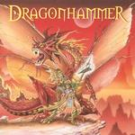

|
|
||
Dragonhammer : The Blood of the Dragon... (2001) |
|

http://www.dragonhammer.com |
1. Legend 4:01 |
7.2/10 |
|
Dragonhammer son otro grupo italiano haciendo, como no, power metal sinfónico, aunque todo esto casi podría haberse deducido sólo por su nombre y el de su primer disco, "Blood of the Dragon...". Aunque no aportan nada nuevo al género (muchos teclados, coros, doble bombo, letras épicas no muy elaboradas...) yo diría que Dragonhammer están por encima de la media de las nuevas bandas que en este estilo están apareciendo en Italia en los últimos años. Una voz, la de Max Aguzzi, clara y vibrante, aunque no excepcional,canciones interesantes y elaboradas, si bien algo previsibles y una presentación razonablemente cuidada, hacen de este un buen primer trabajo. Por otra parte la grabación es mejorable, y sospecho que no deja apreciar al cien por cien la voz de Max Aguzzi que queda un poco apagada, al igual que las guitarras que suenan también algo veladas, y siempre detrás de los teclados. "Legend" contiene los elementos que definen la música de Dragonhammer: coros melodiosos, riffs potentes pero sencillos y algo subordinados a los casi omnipresentes teclados, y solos rápidos e interesantes. Un pequeño interludio con sonidos de batalla, "It's War", nos conduce a "Dragon Hammer", un tema muy rápido gobernado por el doble bombo. La cuarta pista, "Age of Glory", es de tempo más moderado. Los coros y el estribillo son lo más destacable de esta canción. "Scream" es una balada sentida, melodiosa y que tiene un fantástico estribillo a coro. El solo de guitarra, con un marcadísimo, como no había oido hace tiempo, efecto wah, aporta algo distinto. "You Kill" recupera el ritmo frenético, aunque con cambios, muy apoyada en los teclados y en los coros. El estribillo es de lo más memorable del disco. En "Black Sword" aparece un ambiente más lúgubre, con sonidos más graves, algunas voces oscuras y un ritmo moderado pero muy marcado. La octava canción, "Fire" recupera la velocidad, la melodía creada por los teclados y los coros. "Blood in the Sky" tiene un cierto aire a metal clásico, seguramente porque la guitarra sobresale más que en el resto del álbum. Por lo demás, bastantes coros, ritmo rápido y un estribillo bastante interesante. El último tema del disco, "In your Eyes" es otra balada, emocionante y cargada de sentimiento y donde la vibrante voz de Max Aguzzi hace un gran trabajo. |
||
Rubén Béjar |
||